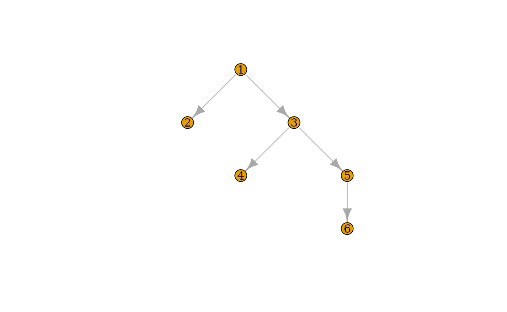

memtools.Rmd
library(memtools)R is a garbage-collected language. This means in practice that the programmer does not need to manage the lifetime of objects. R automatically releases the memory used up by objects that are no longer in use at periodical intervals. In garabage collected languages, memory leaks occur when some object or entity unexpectedly contains or points to an object that is otherwise no longer in use. This is because the garbage collector only reclaims the memory of unreachable objects. Without dedicated tools, detecting the source of object leaks can be very difficult, akin to finding a needle in a haystack.
memtools provides tools to deal with two main tasks:
This vignette explores two case studies to illustrate these tasks.
mem_snapshot() is the workhorse of memtools. It takes a root object as input, traverses all reachable R objects from that root, and records their relations in a form that can be easily inspected and summarised. The output of mem_snapshot() is a data frame that contains the graph of reachable objects, with one row per object, and metadata for that object.
s <- mem_snapshot(list(x = 1, list("foo")))
#> Creating snapshot...
#> Computing dominance and retainment...
#> Creating data frame...
s
#> # A tibble: 10 × 8
#> id type node n_parents n_children n_retained retained_size gc_depth
#> <chr> <chr> <list> <int> <int> <int> <bch:byt> <int>
#> 1 0x55fc3… list <mmtl… 0 3 9 576B 1
#> 2 0x55fc3… pairl… <mmtl… 1 2 4 288B 2
#> 3 0x55fc3… symbol <mmtl… 1 0 0 56B 3
#> 4 0x55fc3… chara… <mmtl… 1 2 2 176B 3
#> 5 0x55fc3… char <mmtl… 1 0 0 56B 4
#> 6 0x55fc3… char <mmtl… 1 0 0 56B 4
#> 7 0x55fc3… double <mmtl… 1 0 0 56B 2
#> 8 0x55fc3… list <mmtl… 1 1 2 168B 2
#> 9 0x55fc3… chara… <mmtl… 1 1 1 112B 3
#> 10 0x55fc3… char <mmtl… 1 0 0 56B 4id: This is the memory address of the object that serves as a unique identifier for the object. You can also retrieve the original object by dereferencing the address with deref():
s$id[[1]]
#> [1] "0x55fc3bf85d78"
deref(s$id[[1]])
#> $x
#> [1] 1
#>
#> [[2]]
#> [[2]][[1]]
#> [1] "foo"type: The typeof() the object.
node: This list-column contains the nodes of the object (see below).
n_parents, n_children: The parents of an object are the nodes that maintain a reference to that object. For instance a list maintains references to all its elements and a function refers to the environment it was created in, its list of arguments, and the R code it executes (respectively its environment(), formals(), and body()).
The root object doesn’t have any parents recorded in the snapshot but note that it could have parents in the real graph of R objects in memory. The choice of a relevant root is thus crucial.
n_retained, retained_size: These provide the number of children that would be released if the object was reclaimed by the GC, and their total size.
gc_detph: This is the number of dominators that must be collected for the object to be reclaimed (see Dominance section).
The memory snapshot is a flat representation of the memory graph in a rectangular data frame. You can inspect and traverse the graph using the node objects of the node column.
n <- s$node[[1]]
n
#> <memtools:node> (root)
#> id: "0x55fc3bf85d78"
#> type: "list"
#> parents: list [0]
#> children: list [3]
#> dominator: <NULL>
#> dominated: list [3]
#> self_size: 64B
#> retained_size: 576B
#> gc_depth: 1A node contains a little more information than the snapshot columns:
parents, children: Lists of arrow objects for the parents and children of the node.
dominator, dominated: The memory node of the dominator and the list of dominated nodes (see Dominance section).
self_size: This is the individual size of the object. Compared to retained_size, it doesn’t include the size of retained nodes. Most objects have a very small size except for vectors. The size of vectors (including lists) increases with their lengths.
The parents and children fields are lists of arrow objects:
n$children
#> [[1]]
#> <memtools:arrow>
#> from: <mmtls_nd>
#> to: <mmtls_nd>
#> depth: 1
#> rel: "attrib"
#>
#> [[2]]
#> <memtools:arrow>
#> from: <mmtls_nd>
#> to: <mmtls_nd>
#> depth: 1
#> rel: "list_elt"
#>
#> [[3]]
#> <memtools:arrow>
#> from: <mmtls_nd>
#> to: <mmtls_nd>
#> depth: 1
#> rel: "list_elt"
#> i: 1The from and to fields of arrows point to the parent and child respectively:
arrow <- n$children[[1]]
# This is `n` itself
identical(arrow$from, n)
#> [1] TRUE
# This is the first child of `n`
arrow$to
#> <memtools:node>
#> id: "0x55fc3bfc71d0"
#> type: "pairlist"
#> parents: list [1]
#> children: list [2]
#> dominator: <mmtls_nd>
#> dominated: list [2]
#> self_size: 56B
#> retained_size: 288B
#> gc_depth: 2A noteworthy part of arrow objects is the rel field which indicates what kind of relationship unites the two nodes:
arrow$rel
#> [1] "attrib"The list is the parent of an attribute field. Why is this the case? Our list is not a classed objects and we haven’t explicitly added attributes. Let’s dereference the attribute pairlist to find out. deref() accepts addresses as inputs as well as node objects:
deref(arrow$to)
#> $names
#> [1] "x" ""Indeed the snapshoted list includes names and these are stored in attributes.
If you’re exploring a node with many children or parents (some nodes have 1000s of parents) it can be insightful to summarise the distribution of relationships:
In general, traversing the graph of objects from node to arrow to node can be slow and cumbersome. This is why memtools provides more structured ways of exploring relationships of dependence, like taking the shortest paths between a node and its dominator.
The memtools snapshots are compatible with the igraph package, an R package that wraps around the C library of the same name. This library offers a large collection of fast algorithms for exploring and summarising the structure of graphs.
You can retrieve the igraph structure of a snapshot using mem_igraph(). The structure is created the first time it is run and then saved inside the snapshot.
g <- mem_igraph(s)
#> Adding igraph structure to snapshot as `mem_igraph` attribute...Using igraph you can visualise very small snapshots such as s. The nodes are labelled according to their row positions in the snapshot:
plot(g, layout = igraph::layout_as_tree(g))Most snapshots are too large to be visualised this way. igraph is still useful with these large snapshots because many advanced algorithms have near-linear complexity. memtools provides a direct interface for the most useful of these algorithms. It includes its own graph dominance algorithm and exposes igraph’s shortest paths algorithm. We’ll cover both of these in the vignette.
You will need some familiarity with the way R objects are structured to make sense of the raw network of relations between objects. An important case is the structure of an environment:
e <- new.env(parent = emptyenv())
e$x <- 1
e$y <- 2
s <- mem_snapshot(e)
#> Creating snapshot...
#> Computing dominance and retainment...
#> Creating data frame...
s
#> # A tibble: 9 × 8
#> id type node n_parents n_children n_retained retained_size gc_depth
#> <chr> <chr> <list> <int> <int> <int> <bch:byt> <int>
#> 1 0x55fc3… enviro… <mmtl… 0 2 8 728B 1
#> 2 0x55fc3… list <mmtl… 1 2 6 616B 2
#> 3 0x55fc3… pairli… <mmtl… 1 2 2 168B 3
#> 4 0x55fc3… symbol <mmtl… 1 0 0 56B 4
#> 5 0x55fc3… double <mmtl… 1 0 0 56B 4
#> 6 0x55fc3… pairli… <mmtl… 1 2 2 168B 3
#> 7 0x55fc3… symbol <mmtl… 1 0 0 56B 4
#> 8 0x55fc3… double <mmtl… 1 0 0 56B 4
#> 9 0x55fc3… enviro… <mmtl… 1 0 0 56B 2This environment contains only two double values but the snapshot contains a lot of intervening nodes. These extra objects come from the internal structure of the hash tables of environments: a list contains buckets of pairlists of objects.
Also be aware that unlike lists, pairlists consist of multiple objects:
s <- mem_snapshot(pairlist(1, 2, 3))
#> Creating snapshot...
#> Computing dominance and retainment...
#> Creating data frame...
s
#> # A tibble: 6 × 8
#> id type node n_parents n_children n_retained retained_size gc_depth
#> <chr> <chr> <list> <int> <int> <int> <bch:byt> <int>
#> 1 0x55fc3c… pairl… <mmtl… 0 2 5 336B 1
#> 2 0x55fc3e… double <mmtl… 1 0 0 56B 2
#> 3 0x55fc3c… pairl… <mmtl… 1 2 3 224B 2
#> 4 0x55fc3e… double <mmtl… 1 0 0 56B 3
#> 5 0x55fc3c… pairl… <mmtl… 1 1 1 112B 3
#> 6 0x55fc3e… double <mmtl… 1 0 0 56B 4That’s because pairlists are structured as linked lists. This is apparent if we plot the their tree structure using igraph:
g <- mem_igraph(s)
#> Adding igraph structure to snapshot as `mem_igraph` attribute...
plot(g, layout = igraph::layout_as_tree(g))
The graph of objects is often too complex to work with. It typically contains hundreds of thousands of objects as soon as the global environment or a namespace (which inherits from the global environment and the search path) is included. It is cyclic because environments may point to themselves (for instance a function bound to the global environment and inheriting from it). Finding leaks and their retainers from a raw snapshot is too difficult.
Enters the dominance tree. This is a transformation of the graph of R objects into a totally ordered tree where parent relationships towards the root can be followed without cycles. This makes it very useful for debugging leaks. The immediate dominator of an object is the closest ancestor through which all paths from the root to the object have to go. If an object has multiple parents, all of them are children or grand-children of its dominator.
In practice this means that the dominator of an object is the most direct ancestor that needs to be deleted for the object to be collected by the GC as well. This does not mean that the dominator is necessarily the source of the leak. The source could be higher or lower in the hierarchy. However, the dominator is a useful starting point in leak investigations.
See ?igraph::dominator_tree for a visual representation of the dominance transformation.
There are two steps to fixing a memory leak:
Sometimes you know right away which objects are leaking and you can directly start with step 2. In other cases you only know from diagnostic tools like gc() that some memory is not being reclaimed and you need first to find out what objects hold that memory. Step 1 consists in taking two memory snapshots before and after running a reprex that causes the leak. The snapshots are then compared to find the new objects in memory.
We illustrate step 1 with a real memory leak that affected the tidyr package from August 2020 to March 2021 (https://github.com/tidyverse/tidyr/issues/1059).
mem_reprex <- function(n) {
library(tidyverse)
library(memtools)
matrix(rep(1, n), ncol = 5) %>%
as.data.frame() %>%
mutate(group = rep(c("a", "b"), each = n / (2 * 5))) %>%
nest(data = -group) %>%
spread(group, data) %>%
gather(group, data, a, b)
# Return `NULL` to ensure results are not retained through
# `.Last.value`
invisible(NULL)
}
mem_reprex(1e8)
gc()
#> used (Mb) gc trigger (Mb) limit (Mb) max used (Mb)
#> Ncells 1083632 57.9 2084282 111.4 NA 1232191 65.9
#> Vcells 51895613 396.0 240310392 1833.5 16384 259081311 1976.7As you can see, a large amount of memory is retained in the vector cells of the R heap, even after deleting the data frame of results. But what exactly is leaking?
Next, create the first memory snapshot to record the current state of objects in memory. There is a choice to make here, what object are we going to supply to mem_snapshot()? Ideally, we would take a snapshot of the GC roots, the objects from which R’s collector starts tracing. There exists several GC roots which are not made available to the R session.
In practice, there is only one GC root of interest, the precious list. This is (as currently implemented) a pairlist of objects protected from garbage collection through an R_PreserveObject() API call. Preserved objects remain in the precious list until a corresponding R_ReleaseObject() call. Most permanent R objects, such as the namespace registry or the global environment, are protected by the precious list. It is ultimately the most complete starting point to take a memory snapshot from.
However, the precious list is cumbersome to work with:
It is internal and private. Retrieving the precious list requires some work.
It is rather unstructured. This is a plain linked list where parent relationships are not meaningful and only the result of the timing of preserve calls.
It contains large and complex objects, such as the global cache for visited bindings of the global environment and the search path.
If you have captured the precious list at R level and new objects have been preserved or released in the mean time, the new state of the list will not be reflected in the R-level pairlist. The precious list needs to be recaptured from the C-level global variable before each snapshot.
Since most leaks are caused by a reference that lives inside a namespace, it is often more practical to start from the namespace registry. This registry is an environment that contains all the namespaces loaded in the R session. memtools exposes it as a list to avoid encumbering the snapshots with the internal environment structures:
str(head(
memtools::root_ns_registry()
))
#> List of 6
#> $ bslib :<environment: namespace:bslib>
#> $ compiler :<environment: namespace:compiler>
#> $ pillar :<environment: namespace:pillar>
#> $ jquerylib:<environment: namespace:jquerylib>
#> $ highr :<environment: namespace:highr>
#> $ methods :<environment: namespace:methods>The namespace registry strikes a good balance between exhaustivity and convenience. It is a good choice of snapshot root to start an investigation.
The first thing to do on a fresh session is to create a dry-run of the reprex. This dry-run will load any required namespace and possibly allocate global variables that some packages cache in memory the first time they need them. Initialising as much code as possible before taking the first snapshot is going to reduce the amount of noise when we’ll compare it with the second snapshot.
mem_reprex(10)Now that we have performed a dry-run of our reprex, let’s record the “before” snapshot, using the namespace registry as a starting point:
root <- root_ns_registry()
before <- mem_snapshot(root)
#> Creating snapshot...
#> Recorded 100000 nodes
#> Recorded 200000 nodes
#> Recorded 300000 nodes
#> Recorded 400000 nodes
#> Computing dominance and retainment...
#> Creating data frame...Next, run the R expression that is leaking memory. There are two strategies here. The simplest is to create large objects that will be easily recognisable from their retained sizes. If that is not possible because the leak only occurs through small objects, you can instead cause a large number of leaks, e.g. 100 or 1000 times, and recognise the leaked objects from the distribution of new nodes. In this example we are using the first strategy by creating large objects.
mem_reprex(1e8)And finally, the “after” snapshot:
after <- mem_snapshot(root)
#> Creating snapshot...
#> Recorded 100000 nodes
#> Recorded 200000 nodes
#> Recorded 300000 nodes
#> Recorded 400000 nodes
#> Computing dominance and retainment...
#> Creating data frame...Two things to note:
Snapshot objects are identified by their address in memory. To make it safe to compare different snapshots taken at different times, the snapshot data frame keeps all the recorded objects alive. There is no risk of R reusing an old memory address with a newly allocated object. There is a strict correspondence between elements with the same id as long as you keep the corresponding snapshot data frames alive.
The after snapshot does not contain any of the memory allocated as part of the before snapshot. That’s because mem_snapshot() skips the bindings of the global environment by default. Since they contain the objects created in the debugging session, recording them would be inefficient (snapshot data frames are very heavy) and confusing.
We can now find the nodes that appear in after but not in before with mem_diff() (internally, this helper simply compares the id columns).
new <- mem_diff(before, after)
nrow(new)
#> [1] 40
sort(new$retained_size)
#> [1] 56B 56B 56B 56B 56B 56B 56B 56B 56B 56B 56B 56B 56B
#> [14] 56B 56B 56B 56B 56B 56B 56B 56B 112B 112B 112B 112B 112B
#> [27] 168B 168B 168B 168B 168B 224B 224B 224B 280B 280B 280B 336B 336B
#> [40] 448BThere is only 40 new objects remaining in memory. They are all small and do not explain the memory leak.
If the leaked objects can’t be found via the namespace registry, there is a good chance that they are leaking via the precious list. We need to change our starting point.
The workflow is slightly different with the precious list:
It is a private internal object so we will need to find its memory address with a debugger like gdb or lldb.
The objects defined in the global environment, which are normally skipped by mem_snapshot(), will this time find their way into snapshots. They are reachable through the global binding cache that is preserved in the precious list. We will need to stash our memory snapshots to prevent them from being recorded by ulterior snapshots.
We need to recapture the precious list before taking each snapshot. As currently implemented, it is a stack of pairlist cells. If you don’t refresh the precious list pointer before taking the “after” snapshot, you will miss all the preserved objects added on top of the stack.
Let’s create a memtools stash to store our debugging objects:
stash <- mem_stash()Follow the steps again in a new R session, this time storing the snapshots in the stash and dereferencing the precious list from its address (see ?roots for more information):
# Dry run
mem_reprex(10)
# First snapshot
stash$before <- mem_snapshot(deref("0x0000000105c06268"))
# Leak run
mem_reprex(1e8)
# Second snapshot - Make sure you have the current address of the
# precious list
stash$after <- mem_snapshot(deref("0x00007fc604ea3910"))Finally, compare the snapshots. Here are the leaking objects!
new <- mem_diff(stash$$before, stash$$after)
sort(new$retained_size)
#> [1] 56B 56B 56B 56B 56B 56B 56B
#> [8] 56B 56B 56B 56B 56B 56B 56B
#> [15] 56B 56B 56B 56B 56B 56B 56B
#> [22] 56B 56B 64B 64B 80B 112B 112B
#> [29] 112B 112B 112B 112B 112B 112B 112B
#> [36] 112B 112B 120B 120B 168B 168B 168B
#> [43] 168B 168B 168B 176B 176B 224B 224B
#> [50] 224B 248B 248B 248B 280B 304B 304B
#> [57] 304B 360B 376B 416B 528B 560B 680B
#> [64] 696B 736B 856B 904B 984B 1.02KB 1.23KB
#> [71] 76.29MB 76.29MB 76.29MB 76.29MB 76.29MB 381.47MB 381.47MB
#> [78] 381.47MBOnce you’ve identified the leaking nodes, make sure they are indeed leaking through the precious list. If that is the case (and it was here), it usually means that something was preserved through R_PreserveObject() but not released. The snapshot can’t help you anymore. The best way forward is to examine the leaked objects to try and find clues about what they are. Use deref() to retrieve the R object of a node.
In our case, the leaked objects were held in a strange circular pairlist. We eventually figured out that this was the precious list of the cpp11 package. It was recognisable from its structure because it is a doubly linked list whose first element points to itself (see ?root_cpp11). This leak was fixed a long time ago but the macOS CRAN binaries of tidyr had never been rebuilt. We sent a new version to CRAN to trigger a rebuild and fix the leak.
If an object is leaking through the precious list memtools cannot help finding the source. However in many cases leaks occur through unexpected references of live objects. In that case we can find the source of the leak using two graph algorithms: dominance and shortest paths.
In the second case study we’ll explore why namespaces unregistered by pkgload fail to be collected by R. It was not surprising that old namespaces would be retained after a load_all(), but we wanted to understand why that was the case.
In this example we know ahead of time what is the object being leaked and we don’t need to compare snapshots. Instead, we’ll take its adress with obj_address().
library(memtools)
# Load rlang a first time. This creates a fake namespace that is
# leaked on reloads.
pkgload::load_all("rlang")
# Take the address of the fake namespace
ns_id <- obj_address(rlang::ns_env("rlang"))Let’s reload rlang and take a memory snapshot of the namespace registry:
# Reload rlang and trigger GC
pkgload::load_all("rlang")
invisible(gc())
# The previous rlang namespace could now ideally be reclaimed.
# However it is still there (R would crash or show a different object if it had been collected).
deref(ns_id)
#> <environment: namespace:rlang>
s <- mem_snapshot(root_ns_registry())
#> Creating snapshot...
#> Recorded 100000 nodes
#> Recorded 200000 nodes
#> Recorded 300000 nodes
#> Recorded 400000 nodes
#> Computing dominance and retainment...
#> Creating data frame...There are two main steps to figuring out how a node is leaking:
As explained in the Dominance section, each object has a unique dominator which is the closest parent which is guaranteed to allow the object to be reclaimed by the GC if that parent was itself collected. All the paths from the root to the object must go through the dominator. This does not mean that the dominator will give us the full information about the source of the leak, but it’s the point from which you should start investigating.
Retrieve the dominator from the node object of the leaking rlang namespace:
# Find the row position of the namespace in the snapshot
(ns_i <- which(s$id == ns_id))
#> [1] 122617
# Retrieve the node and its dominator
(node <- s$node[[ns_i]])
#> <memtools:node>
#> id: "0x7fb4cc921040"
#> type: "environment"
#> parents: list [972]
#> children: list [2]
#> dominator: <mmtls_nd>
#> dominated: list [2]
#> self_size: 56B
#> retained_size: 8.39MB
#> gc_depth: 2
(dom <- node$dominator)
#> <memtools:node> (root)
#> id: "0x7fb4cc088730"
#> type: "list"
#> parents: list [0]
#> children: list [39]
#> dominator: <NULL>
#> dominated: list [30,080]
#> self_size: 352B
#> retained_size: 33.7MB
#> gc_depth: 1You can tell that the dominator is the root node because it has a special header. Also, it doesn’t have any parents and its own dominator is NULL. Only the root node does not have any dominator. We can make sure by dereferencing it:
str(head(deref(dom)))
#> List of 6
#> $ rstudioapi:<environment: namespace:rstudioapi>
#> $ magrittr :<environment: namespace:magrittr>
#> $ grDevices :<environment: namespace:grDevices>
#> $ pkgload :<environment: namespace:pkgload>
#> $ debugme :<environment: namespace:debugme>
#> $ R6 :<environment: namespace:R6>In this case, we didn’t make any progress by taking the dominator. Our starting point is the root node. What this means in practice is that the rlang namespace is leaking through multiple paths, in this case multiple namespaces registered in the R session.
We now have two endpoints: our leaked namespace and its dominator, the namespace registry. We are ready to examine the shortest paths between these two objects.
paths <- mem_paths_shortest(s, node, from = dom)
#> Adding igraph structure to snapshot as `mem_igraph` attribute...
length(paths)
#> [1] 8There are at least 8 paths through which the rlang namespace is retained. There could be additional, longer paths as well. Let’s examine one of these.
p1 <- paths[[1]]
length(p1)
#> [1] 8
# This list contains all the nodes of one of the first shortest path between the root ...
p1[[1]]
# ... and the leaked object
deref(p1[[8]])As a first approach let’s examine the types of each node on the path:
library(purrr)
map_chr(p1, "type")
#> [1] "list" "environment" "environment" "list"
#> [5] "pairlist" "promise" "closure" "environment"The environment -> list -> pairlist -> promise part suggests that the leak occurs through a promise bound in an environment (the sequence of environment, list and pairlists is typical of an environment hashtable).
Dereferencing the first nodes on the path, we see that this first leak occurs through memtools’ imports environment.
deref(p1[[2]])
#> <environment: namespace:memtools>
deref(p1[[3]])
#> <environment: 0x7fa8f19487b0>
#> attr(,"name")
#> [1] "imports:memtools"The dependencies of a package are loaded lazily via the promise mechanism. This is a common cause of promise objects which are otherwise normally created inside execution environments of functions. You can recognise a lazyload promise from the call to lazyLoadDBfetch():
rlang:::promise_expr(deref(p1[[6]]))
#> lazyLoadDBfetch(c(678142L, 422L), datafile, compressed, envhook)It is now clear what is happening. memtools was loaded after the leaked namespace was created and imported objects from that namespace via an import() directive. This is one of them:
deref(p1[[7]])
#> function(key, value = NULL, finalizer = NULL, on_quit = FALSE) {
#> .Call(rlang_new_weakref, key, value, finalizer, on_quit)
#> }
#> <bytecode: 0x7f93a63a2068>
#> <environment: namespace:rlang>In this case this leak is not a bug but the expected behaviour. If objects were imported from our namespace between the time it was loaded and unregistered, it should continue keep working. Maybe there are other paths that are more problematic?
We fixed the leaks, recorded a new snapshot, took new shortest paths, and found a similar structure. The leak occurs through the pillar namespace:
p1 <- paths[[1]]
map_chr(p1, "type")
#> [1] "list" "environment" "list" "pairlist"
#> [5] "environment" "list" "pairlist" "list"
#> [9] "closure" "environment"
deref(p1[[2]])
#> <environment: namespace:pillar>
deref(p1[[9]])
#> function(x) {
#> "quos"
#> }
#> <environment: namespace:rlang>Looking at the TAG fields of the hash table buckets, we see that this time the function inheriting from the rlang namespace leaked through the S3 registration table:
pkgload normally unregisters the S3 methods that are documented in the NAMESPACE file. However, this misses all the methods that are lazily registered. Here are the faulty lines.
In this example we explore a leak that involved asynchronous programming with Shiny https://github.com/rstudio/pool/issues/114.
Here is a reprex that reproduces the leak. It schedules a callback function with the later package and cancels it immediately with an ad hoc mechanism.
do_later <- function(f, t = 3, verbose = FALSE) {
force(f)
later::later(
function() {
if (is.null(f)) {
if (verbose) {
message("f was cancelled")
}
return()
}
f()
},
delay = t
)
invisible(function() {
f <<- NULL
})
}
reprex <- function(t = 120, verbose = FALSE) {
cancel <- do_later(
function() message("This callback has executed"),
t,
verbose
)
cancel()
invisible(NULL)
}In the tidyr example, the reprex was leaking large objects. Here we know from preliminary observations that the reprex only causes small leaks. This will make it harder to detect the leaked objects in the snapshot diff because the leaked objects will be indistinguishable from the small objects that are allocated as part of normal R operations. We need another approach: we are going to run the reprex a 100 times and look for leaked objects that appear in multiples of 100. As usual, we’ll start with the namespace registry.
library(memtools)
# Dry run
reprex(0)
root <- root_ns_registry()
before <- mem_snapshot(root)
# Cause 100 leaks in between snapshots
for (x in 1:100) reprex(120)
after <- mem_snapshot(root)Only 84 new objects, it doesn’t look like the leak takes place within the namespace registry.
Let’s look at the type distribution of these objects
library(purrr)
types <- map_chr(new$node, "type")
table(types)
#> types
#> bytecode char character closure double integer
#> 13 1 2 13 15 1
#> logical pairlist symbol
#> 1 37 1We see bytecode objects, closures, and pairlists. All of the closures inherit from the compiler namespace:
clos <- which(types == "closure")
# All the closures are related to JIT compilation
unique(map(new$node[clos], ~ environment(deref(.x))))
#> [[1]]
#> <environment: namespace:compiler>And looking at the pairlists, they are formal argument lists for these closures. The 84 new objects have been left behind after JIT compilation. This confirms that we have failed to capture the leak and we need to start over from higher up.
Let’s try again with the precious list:
# Stash all our debugging files
stash <- mem_stash()
# Dry run
reprex(0)
(lldb) p R_PreciousList
#> (SEXP) $0 = 0x00007fc63212f180
stash$before <- mem_snapshot(deref("0x00007fc63212f180"))
for (x in 1:100) reprex(120)
(lldb) p R_PreciousList
#> (SEXP) $0 = 0x00007fc5ff4a1288
stash$after <- mem_snapshot(deref("0x00007fc5ff4a1288"))We now see a lot more objects in the snapshot diff.
new <- mem_diff(stash$before, stash$after)
nrow(new)
#> [1] 1710
types <- purrr::map_chr(new$node, "type")
table(types)
#> types
#> bytecode char character closure double
#> 17 1 3 213 16
#> environment integer logical pairlist promise
#> 203 2 1 951 300
#> symbol
#> 3There are a little more than 200 closures. Let’s take a closer look.
clos_locs <- which(types == "closure")
clos <- map(new$node[clos_locs], deref)
clos_envs <- unique(map(clos, environment))
# We now have the compiler namespace and 100 unique envs
length(clos_envs)
#> [1] 101
str(tail(clos_envs))
#> List of 6
#> $ :<environment: 0x7fc604eb7158>
#> $ :<environment: 0x7fc604eb0940>
#> $ :<environment: 0x7fc604eaa128>
#> $ :<environment: 0x7fc604ea3910>
#> $ :<environment: 0x7fc604c28518>
#> $ :<environment: namespace:compiler>We find 100 unique closure environments, a number that matches the number of times we ran the reprex. What do these closures look like?
head(clos)
#> [[1]]
#> function() {
#> if (is.null(f)) {
#> if (verbose) {
#> message("f was cancelled")
#> }
#> return()
#> }
#> f()
#> }
#> <bytecode: 0x7fc604e12518>
#> <environment: 0x7fc5ff49d3b0>
#>
#> [[2]]
#> function() {
#> f <<- NULL
#> }
#> <bytecode: 0x7fc604e98940>
#> <environment: 0x7fc5ff49d3b0>
#>
#> [[3]]
#> function() {
#> if (is.null(f)) {
#> if (verbose) {
#> message("f was cancelled")
#> }
#> return()
#> }
#> f()
#> }
#> <bytecode: 0x7fc604e12518>
#> <environment: 0x7fc5ff494d98>
#>
#> [[4]]
#> function() {
#> f <<- NULL
#> }
#> <bytecode: 0x7fc604e98940>
#> <environment: 0x7fc5ff494d98>
#>
#> [[5]]
#> function() {
#> if (is.null(f)) {
#> if (verbose) {
#> message("f was cancelled")
#> }
#> return()
#> }
#> f()
#> }
#> <bytecode: 0x7fc604e12518>
#> <environment: 0x7fc5ff48d180>
#>
#> [[6]]
#> function() {
#> f <<- NULL
#> }
#> <bytecode: 0x7fc604e98940>
#> <environment: 0x7fc5ff48d180>The same two closures are repeated for each reprex: the promise registered by our reprex and the cancelling closure. Let’s examine the promise closure.
clo1 <- new$node[[clos_locs[[1]]]]
clo1$dominator
#> <memtools:node> (root)
#> id: "0x7fc5ff4a1288"
#> type: "pairlist"
#> parents: list [0]
#> children: list [2]
#> dominator: <NULL>
#> dominated: list [13,317]
#> self_size: 56B
#> retained_size: 13.9MB
#> gc_depth: 1It is dominated by the root. Since the root is the top of the precious list, we now know that this promise is the last thing that was preserved with R_PreserveObject(). Indeed the promise is not being released even though it has been cancelled. The solution to fix this leak was to communicate the cancellation to the later event loop instead of just assigning the underlying closure to NULL.